<<< Go back to Manual Contents Page
Mapping and Phylogenetics - Costa Rica 2025
Module Lead: Mat Beale
Table of contents
- Module Overview and Aims
- Introduction
- Practical Exercise - Mapping & Phylogeny
Module Overview and Aims
When we sequence a genome, we aim to capture information about: * Single Nucleotide Polymorphisms (SNPs) * Insertions and Deletions (INDELs) * Copy Number Variations (CNVs) * Structural rearrangements * Gene gain and loss (i.e. the pangenome)
There are two main approaches used for reconstructing bacterial genomes for population analyses.
- De novo assembly
- Map to Reference genome
Each has benefits and limitations. This module will focus on Reference mapping.
For reference mapping, whether we are dealing with different bacterial isolates, with viral populations in a patient, or even with genomes of different human individuals, the principles are essentially the same. Instead of assembling the newly generated sequence reads de novo to produce a new genome sequence, it is easier and much faster to align or map the new sequence data to the reference genome (please note that we will use the terms “aligning” and “mapping” interchangeably). We can then readily identify SNPs and INDELs that distinguish closely related populations or individual organisms and may thus learn about genetic differences that may cause drug resistance or increased virulence in pathogens, or changed susceptibility to disease in humans. One important prerequisite for the mapping of sequence data to work is that the reference and the re-sequenced subject have the same genome architecture.
In this exercise, we will use sequence data from Vibrio cholerae genomes to learn about mapping and phylogenetics. Importantly, although the genome data is real, the collection has been assembled for the purpose of this practical exercise, and has also been edited to make it run more efficiently in the Virtual Machine training environment.
Introduction
Mapping to reference genome
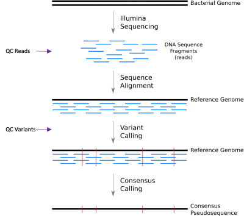
Sequencing data formats
Raw data directly from the sequencer may be in sequencer-specific formats, but will always be converted to fastq format for downstream analysis. fastq is a plain text format that is standard within bioinformatics.
Fastq format
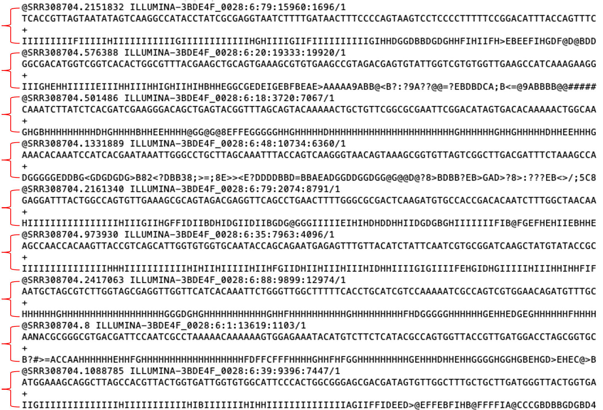
In a fastq file, each sequencing read is represented by 4 different rows
- Read ID
- always begins with ‘@’
- Often includes information about sequencer and location on flow cell
- Sequence info
- The DNA sequence (A, T, G, C, N) at each position in read
- Comment Line
- Begins ‘+’, allows for additional information to be included – rarely used
- Quality scores
- Score for each base position in read – in ASCII code.
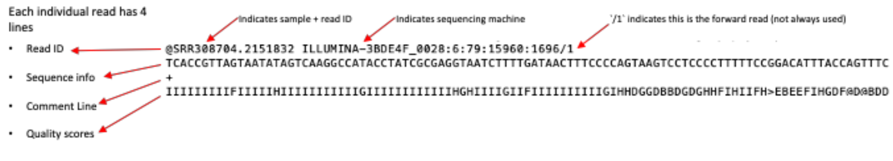
Map to reference - SAM format
Each FASTQ contains thousands to millions of sequencing reads
Matching each read to the correct place in the genome (allowing for changes and errors) is computationally challenging
We use a ‘read aligner’ to map the position each read belongs to on a reference genome
- Short Reads -
BWA,Bowtie2 - Long Reads -
minimap2
Mapping produces a SAM file (or the compressed binary version BAM file)
We often use a tool called samtools to manage and view these large and complex files
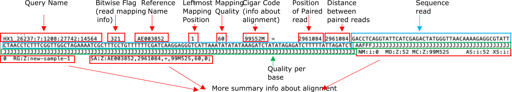
Variant Calling
When reads are aligned to a reference genome, point mutations (SNPs) between the sequencing reads and the reference can be identified. In the plot below: * Reads are in blue / green. * Changes from the reference are highlighted for each read in red.
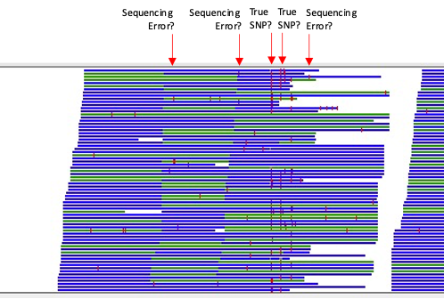
Some variants can be very easy to determine However, sequencing error can lead to changes that are technical artefacts
Some variants are therefore more difficult to determine (e.g. a low coverage region with very few reads)
What if some reads correspond to a SNP and others do not?
Variant callers (e.g.
bcftools,GATK,FreeBayes) apply statistical models to determine true variants, accounting for:Reads counts/proportions supporting each allele
Quality scores for base, reads, mapping, position in the read a variant occurs
Variant callers output their analysis in a ‘variant call format’ –
VCFfile
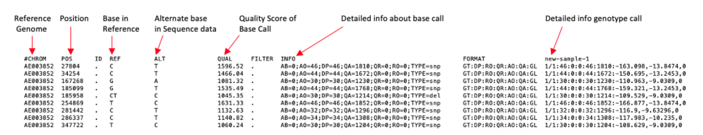
Consensus calling
- Variant calls will be filtered and assessed (generally in an automated way).
- Once we have a filtered variant set, variants can be applied to the reference genome.
- This generates a consensus ‘pseudosequence’ in FASTA format.
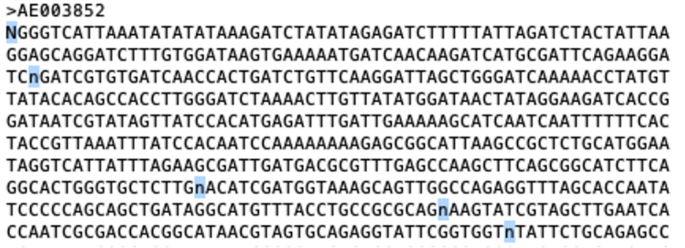
- Note, that one important step that can be overlooked is false negative variant calls
- VCF format only highlights changes from the reference (i.e. positive calls)
- If a base position has low coverage and no SNP is called, how do you know if there is a SNP or not?
- Some methods will simply assume that the site is ‘reference’, without evidence to the contrary
- This can give misleading results for some analyses (e.g. phylogenetics)
- Important to ensure all sites without support are tested, and marked as ‘N’.
We can use integrated pipelines to automate parts of these processes
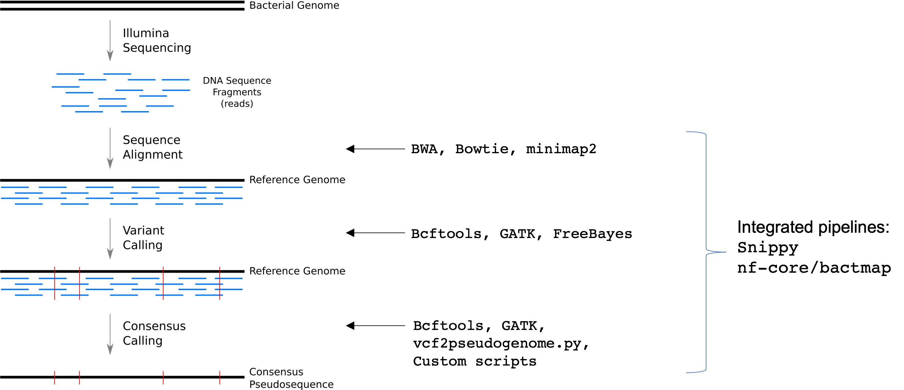
Practical Exercise - Mapping & Phylogeny
Finding the data
Navigate to the Module_4_Mapping_Phylogeny directory
cd Module_4_Mapping_PhylogenyWe can confirm where we are
pwdWe can also examine the contents of this file
ls -l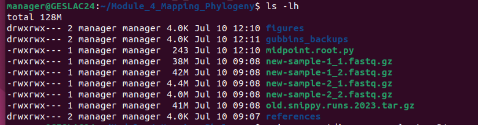
The folder contains:
- two pairs of sequencing reads :
new-sample-1_1.fastq.gz,new-sample-1_2.fastq.gznew-sample-2_1.fastq.gz,new-sample-2_2.fastq.gz
- a folder containing indexed reference genomes
- an archive file containing previous
snippyruns (snippy.runs.1.tar.gz)
Perform mapping of reads to reference genome using snippy
Snippy is an integrated pipeline that maps reads to a reference genome and produces a range of outputs. For the purposes of this tutorial, we will use snippy to organise analyse our genomes.
You can view the options for snippy using the following code:
snippy -h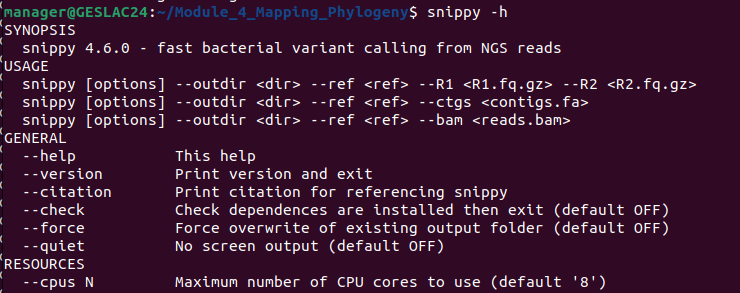
Now run snippy on the pair of fastqs (for this exercise we’ll call this ‘new-sample-1’)
snippy --outdir new-sample-1 --R1 new-sample-1_1.fastq.gz --R2 new-sample-1_2.fastq.gz --ref references/Vibrio_cholerae_O1_biovar_eltor_str_N16961_v2.fa --cpus 4 --ram 4 --force --quietWait for snippy to finish
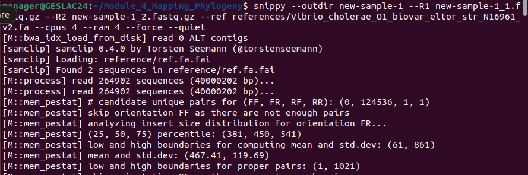
Examine results of snippy
ls -lh new-sample-1/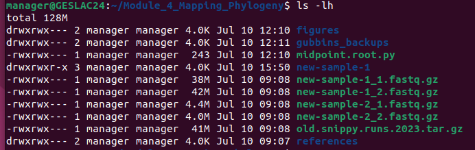
You can examine the log file to see exactly what snippy has done
less new-sample-1/snps.logExamine snippy logs
We’ll use grep to retrieve the relevant lines for each command from the log file.
First, here is the command we used to set snippy running
grep "outdir" new-sample-1/snps.log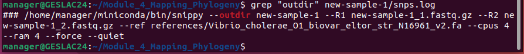
After ensuring the reference genome is indexed, snippy maps the reads to the reference genome using bwa mem
grep "bwa mem" new-sample-1/snps.log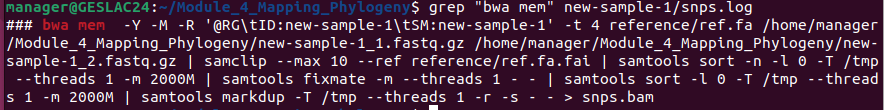
Within that command, snippy also marks duplicate sequencing reads using samtools markdup (we extract only the first part of that command here, but you can look for it with less)
grep "COMMAND: samtools" new-sample-1/snps.logSnippy then uses FreeBayes to call variants against the reference genome, producing a variant call file (.vcf)
grep "freebayes" new-sample-1/snps.log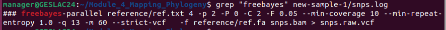
Snippy then applies some filters to assess the quality of those variants. It then applies the high quality variants to the reference genome to create a ‘pseudosequence consensus’ representation of our new genome
grep "bcftools consensus" new-sample-1/snps.log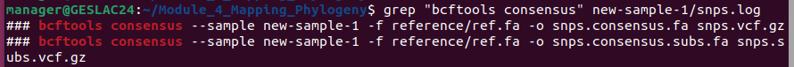
Snippy creates two versions of the pseudosequence consensus: - snps.consensus.fa contains all high quality variants - snps.consensus.subs.fa contains only high quality SNPs (no INDELS)
Examine snippy outputs
The bam file contains all the mapping positions on the genome for each individual read, along with metrics around mapping quality. This is a binary (machine readable) file, but we can view it using samtools view
samtools view new-sample-1/snps.bam | head -2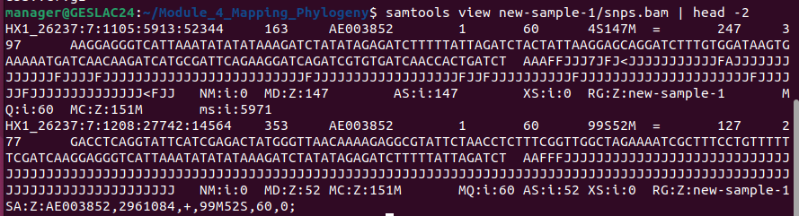
The VCF file contains all the variants that have been called in our new genome compared to the reference genome
head -35 new-sample-1/snps.vcf 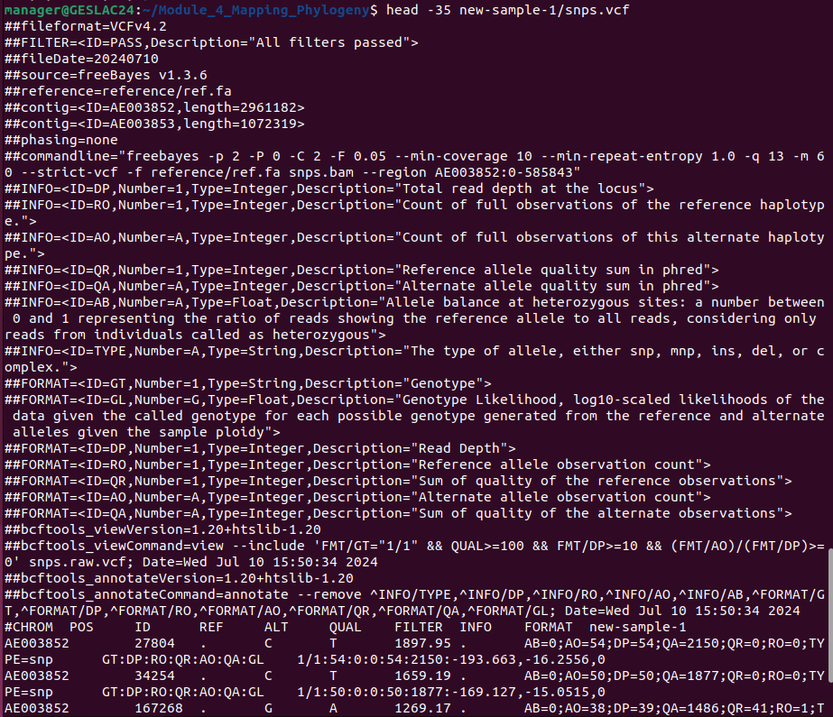
The first ~28 lines here are ‘headers’ and contain information about what has been done to call the variants, and helps you to interpret what different columns mean.
The last ~7 lines are individual variants, one per line. Variants columns are labelled
#CHROM POS ID REF ALT QUAL FILTER INFO FORMAT new-sampleWe can view a slightly easier summary of these variants in the snps.tab file
head -5 new-sample-1/snps.tab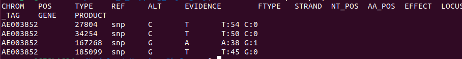
In this file, we have not provided gene information, so only the first 6 columns are relevant
Snippy has also created a fasta file with our pseudosequence genome
head new-sample-1/snps.consensus.fa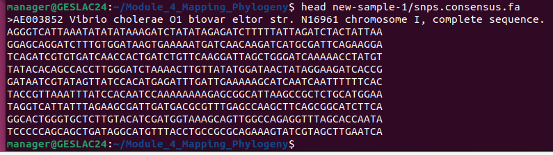
Map a second genome to reference
We now need to map the second genome (new-sample-2) to our reference
Adapt the code examples provided above to run snippy on the second set of fastq files
Examine the results of snippy for new-sample-2 using grep, ls and less
Use an existing assembly as input to snippy
Sometimes we only have assemblies available, or we want to integrate long-read data into our analysis of short-read genomes. Snippy allows us to do this using the --ctgs argument. This takes an existing assembly file and simulates short reads, before calling variants against the reference.
We are going to integrate assemblies from a genome called “CTMA_1441” into our mapping analysis analysis. This genome was published in 2020 (https://pubmed.ncbi.nlm.nih.gov/32586863/), and used both short and long reads. For the purposes of this exercise, we have assembled it using three different approaches:
- Short read assembly (SPAdes) from Illumina reads
- Long read assembly (Dragonflye) from Oxford Nanopore reads
- Hybrid assembly from long reads (Dragonflye), followed by short read polishing
Note that we will explore the differences between these assembly methods more in a later module.
Locate existing assemblies
The reads are hosted in the course GitHub repository. If that has been updated on your local VM, the files should be available to access. Let’s check:
ls -lh ~/github_repository/course_data_2025/mapping_and_phylo/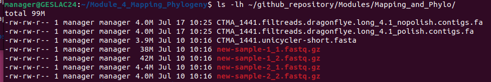
If the files are missing, check with the instructors.
Assuming they are available, we can copy the assemblies to our current working directory to make things easier:
cp ~/github_repository/course_data_2025/mapping_and_phylo/CTMA_1441.* .Map an existing short-read assembly
The short read assembly is called CTMA_1441.unicycler-short.fasta. We can add the short-read assembly to snippy like this:
snippy --outdir CTMA_1441.short --ctgs CTMA_1441.unicycler-short.fasta --ref references/Vibrio_cholerae_O1_biovar_eltor_str_N16961_v2.fa --cpus 4 --ram 4 --force --quiet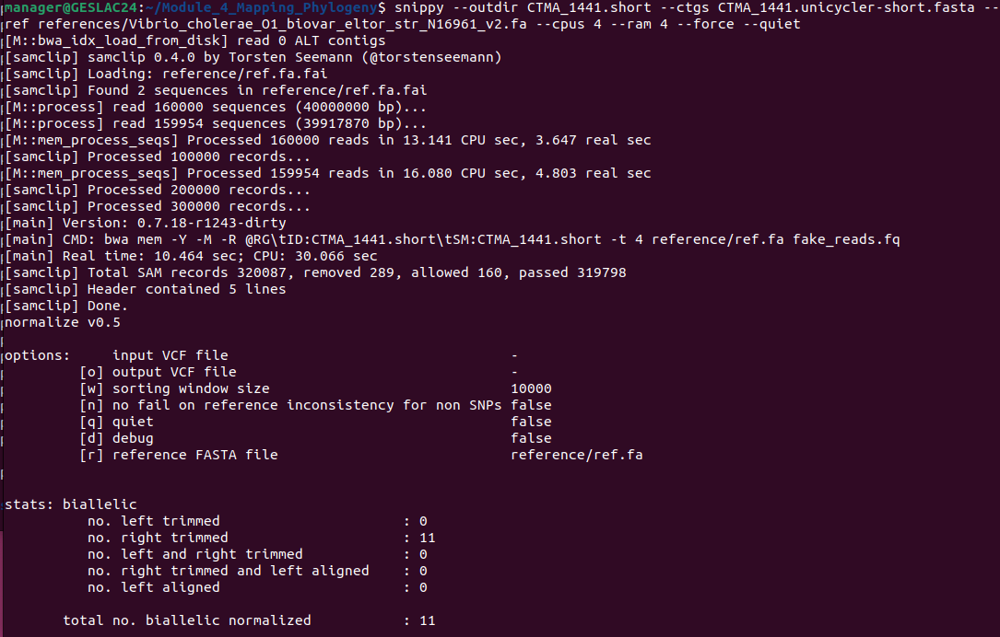
Map a long-read assembly to reference
We now need to map the two long read assemblies to our analysis: - CTMA_1441.filtreads.dragonflye.long_4.1_polish.contigs.fa - CTMA_1441.filtreads.dragonflye.long_4.1_nopolish.contigs.fa
Adapt the code examples provided above to run snippy on the long-read assemblies using the output directories CTMA_1441.long_polish and CTMA_1441.long_nopolish.
Examine the results of snippy for each assembly using grep, ls and less.
What do you notice about the number of variable sites (reported at the end of the snippy run) identified with the different assemblies?
Contextualise new genomes with a collection
Now lets look at this new genome in context with a collection.
We can add this genome to a collection of genomes mapped using snippy-core.
For this exercise, we will again retrieve our data from the github folder:
cp ~/github_repository/course_data_2025/mapping_and_phylo/old.snippy.runs_2025.tar.gz .Check the files are there:
ls -lh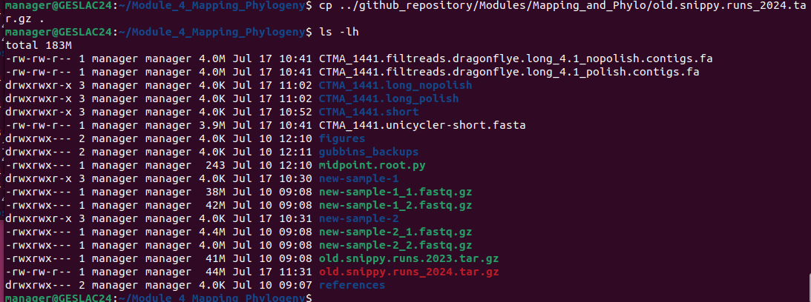
(Note that there is an existing file in our directory called `old.snippy.runs.2023.tar.gz - we will not be using this).
First, let’s extract the old snippy runs from our archive file
tar -zxf old.snippy.runs_2025.tar.gzWe can see that we now have a new directory old.snippy.runs_2024
ls -lh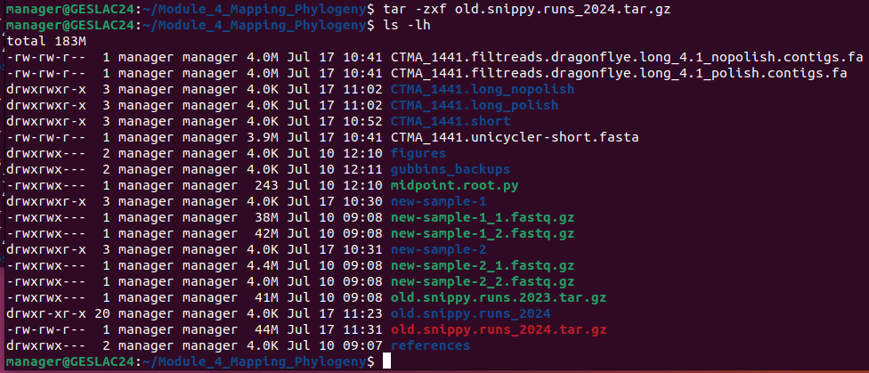
ls -lh old.snippy.runs_2024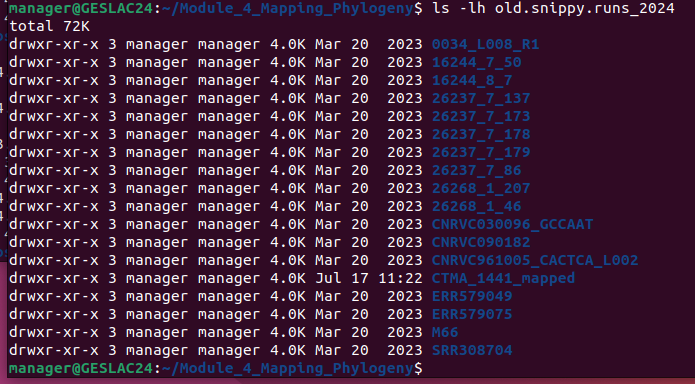
Now lets use snippy-core to summarise all these genomes along with the new ones and create a multiple sequence alignment
snippy-core --ref references/Vibrio_cholerae_O1_biovar_eltor_str_N16961_v2.fa old.snippy.runs_2024/* new-sample-1 new-sample-2 CTMA_1441.short CTMA_1441.long_polish CTMA_1441.long_nopolish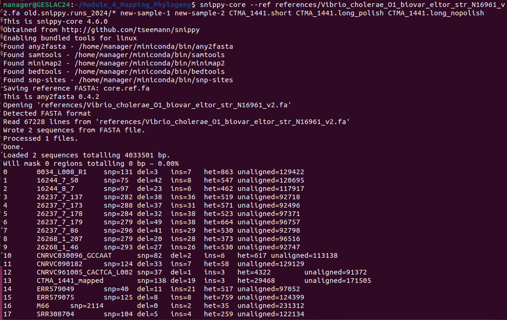
Snippy has now created a number of files, including a ‘core SNP alignment’
ls -l core.*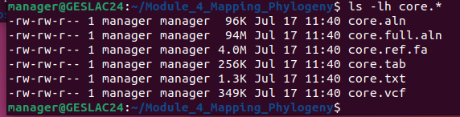
We have various files that summarise our variants, e.g.
head core.tab 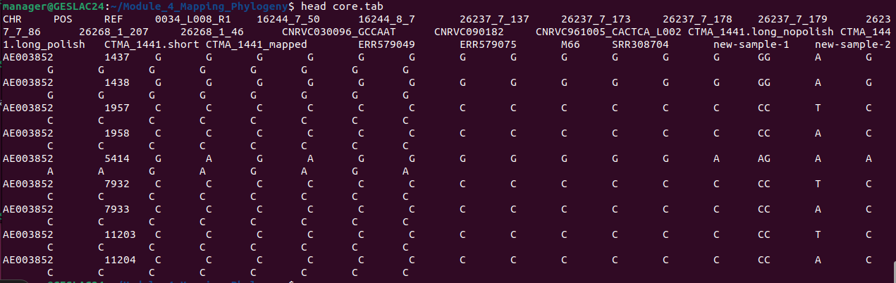
And our multiple sequence alignment containing all genomes:
head core.full.aln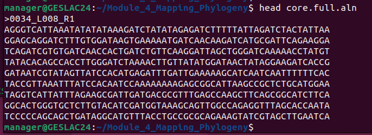
This file masks sequences with low confidence in different ways, but for some applications we want everything masked in the same way. Let’s change that so anything uncertain is marked as ’N’ using the snippy-clean_full_aln script that comes with snippy.
snippy-clean_full_aln core.full.aln > clean.full.alnPhylogenetics
Now that we have a clean multiple sequence alignment, we are now going to use IQ-TREE to build a maximum likelihood phylogeny.
Make a SNP-only alignment using snp-sites
Calculating a phylogeny on whole genome sequences can be very time consuming. We can speed this up by only using the variable sites (SNPs). However, we need to be aware that only including variable sites can affect the evolutionary rate estimates made by phylogenetics software - therefore, we need to account for the sites we remove in our analysis.
We will use snp-sites to do this. You can view the options for snp-sites
snp-sites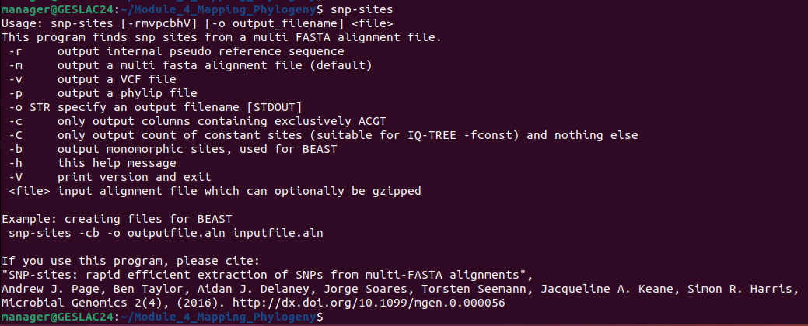
First, remove all the invariant sites and create a SNP-only multiple sequence alignment.
snp-sites -o clean.full.SNPs.aln clean.full.alnWe can also use snp-sites to find out how many invariant sites were removed (and what proportion of A, T, G, C they were). Use snp-sites -C to do this for the file above.
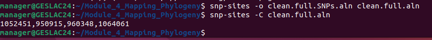
Calculate a phylogenetic tree from the SNPs using IQ-TREE2
We can look at the options for IQ-TREE below
iqtree -h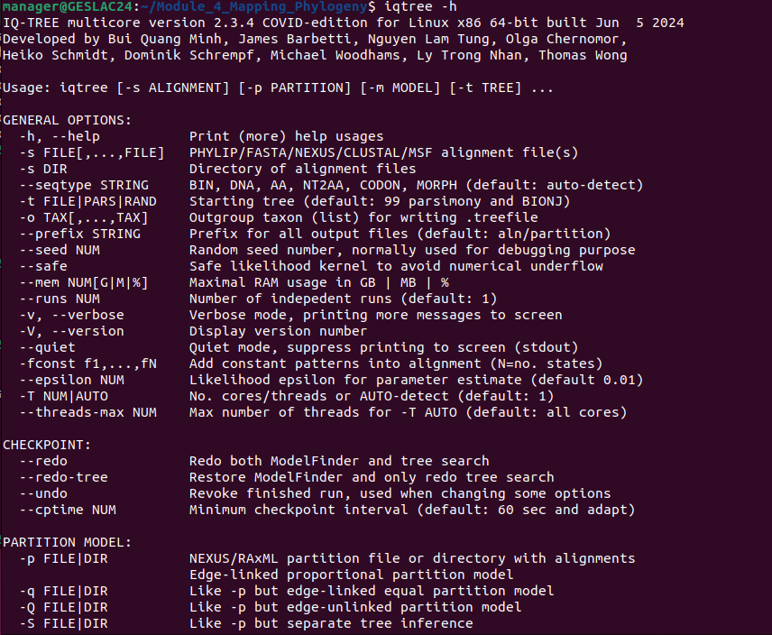
In the command below, we: - specify the multiple sequence alignment using -s clean.full.SNPs.aln - ask IQ-TREE to take account of missing invariant sites using -fconst $(snp-sites -C clean.full.aln) - specify an evolutionary model we want IQ-TREE to use -m GTR+F+I - tell IQ-TREE to use a maximum of 2 CPUs (threads) and 2GB memory -T 2 -mem 2G - perform 1000 ultrafast bootstraps -B 1000 - use sample M66 as an outgroup -o M66
iqtree -s clean.full.SNPs.aln -fconst $( snp-sites -C clean.full.aln ) -m GTR+F+I -T 2 -mem 2G -B 1000 -o M66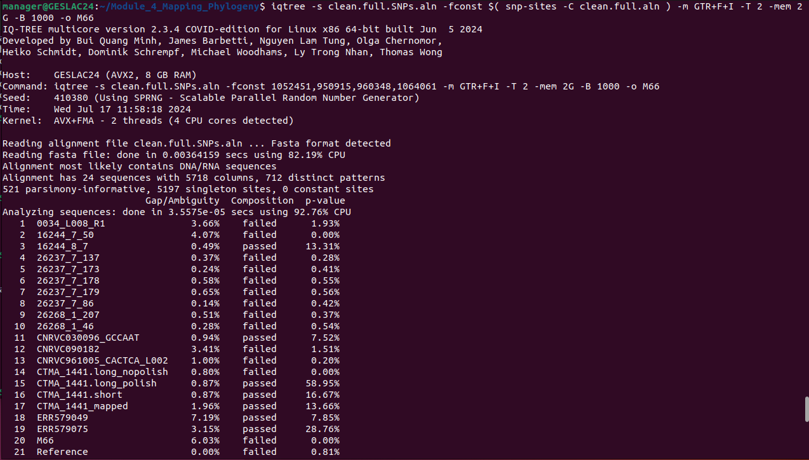
Look at folder
ls -lh clean.full.*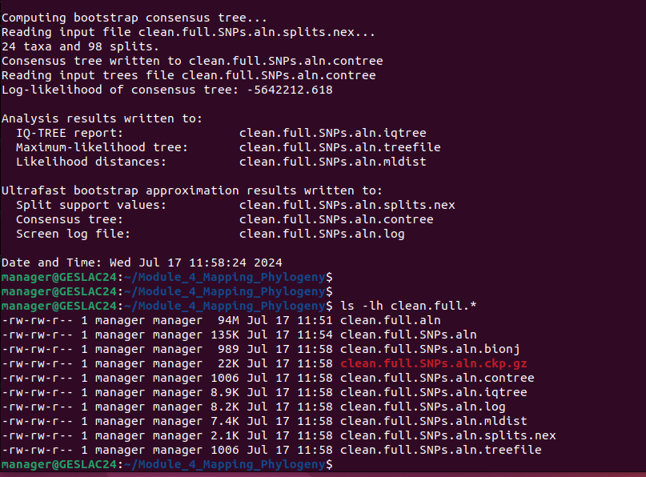
Our maximum likelihood tree is labelled clean.full.SNPs.aln.treefile. The treefile suffix is not always correctly identified by many tools, so we’ll relabel this as something else:
cp clean.full.SNPs.aln.treefile clean.full.SNPs.aln.treVisualise a phylogenetic tree
To examine our tree, we can look at the text file:
cat clean.full.SNPs.aln.tre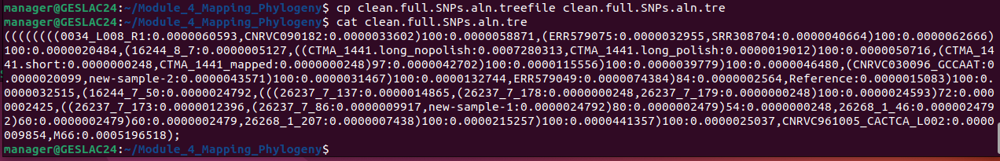
But this is not very helpful - it’s just raw text in ‘newick’ format.
Instead, we can visualise this using figtree
figtree clean.full.SNPs.aln.tre &(Note: Remember to include the & symbol at the end - this allows figtree to run in the background, and allows you to still use the command prompt)
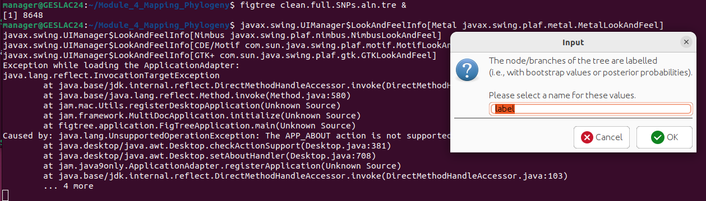
Ignore the java error messages. The popup box is asking you how to describe the ‘bootstrap values’. You can click ‘OK’ here.
You should now have a visualisation of the tree we just generated
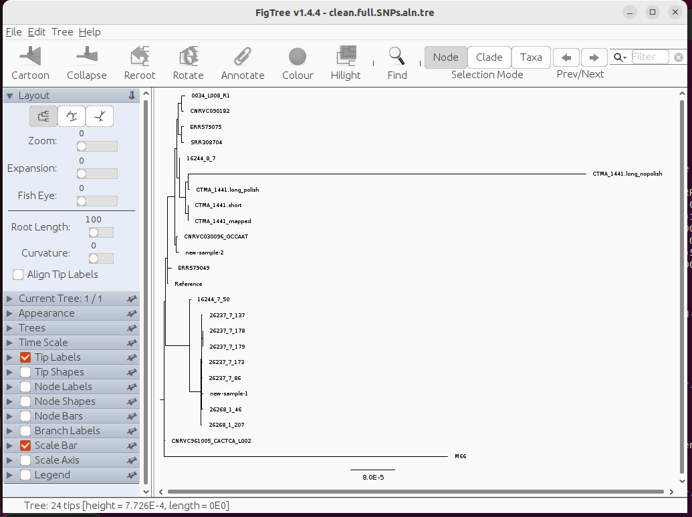
Examine the tree: - How are new-sample-1 and new-sample-2 related to each other? - What do you notice about the different versions of the assembled genomes CTMA_1441? - What does this tell you about the different assembly methods?
Adjusting a dataset to remove a poor quality genome
The unpolished long-read assembly CTMA_1441.long_nopolish is filled with uncorrected errors. We therefore should not use it in our analysis. We will also remove the duplicate examples of CTMA_1441, so we are only using a single example. We can rerun snippy-core to rebuild the alignment without the unnecessary samples:
snippy-core --ref references/Vibrio_cholerae_O1_biovar_eltor_str_N16961_v2.fa old.snippy.runs_2024/* new-sample-1 new-sample-2snippy-clean_full_aln core.full.aln > clean2.full.alnAnd now build a new phylogeny:
Run
snp-sitesto create a file calledclean2.full.SNPs.alnRun
iqtreeto calculate a phylogeny forclean2.full.SNPs.alnRename the final treefile to
clean2.full.SNPs.aln.tre
You can recheck the tree using figtree.
Tree Visualisation using Microreact
We can also visualise our tree using a webtool called Microreact
- Open Firefox and navigate to https://microreact.org/
- Click ‘upload’
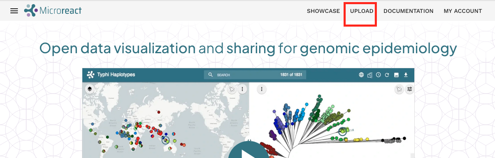
- Select the file upload, or drag the tree file
clean2.full.SNPs.aln.treonto the upload screen
Microreact may not recognise the file, so let’s tell micoreact this this is a tree in newick format. Note that we can also use this screen to add metadata in csv format.
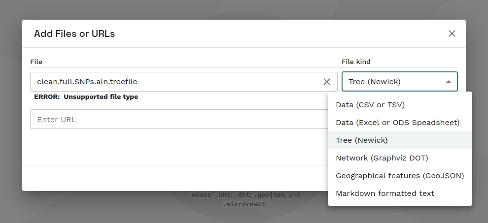
Click continue to view the tree
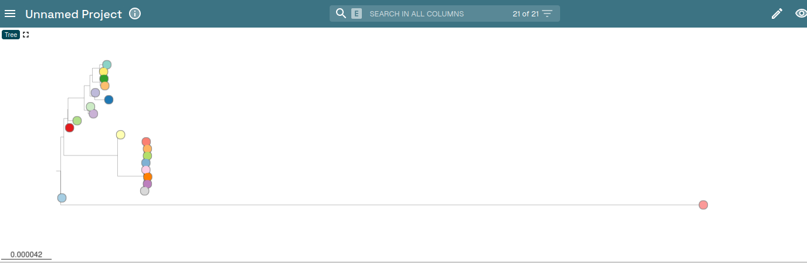
Accounting for recombination with gubbins
We can use gubbins to infer recombining sites by looking for increased SNP density that occurs in specific ancestral nodes
gubbins has been installed using conda. We must activate the relavent conda environment before running any commands using gubbins.
conda activate gubbins-envNow we can run gubbins
run_gubbins.py -h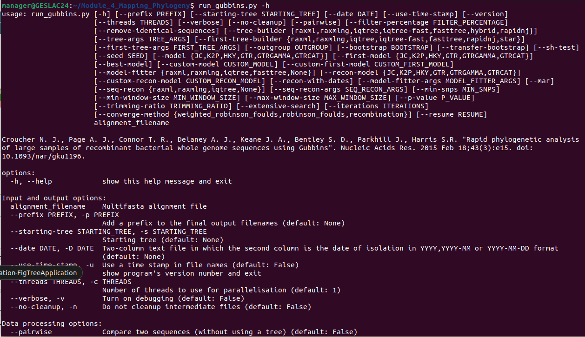
The following command runs gubbins on standard settings, with 4 CPUs.
Note: the -c option tells the program to use 4 CPUs. Note: the -p option tells the program to name all files with the prefix gubbins This command can take a few minutes to run.
run_gubbins.py -c 4 -p gubbins clean2.full.aln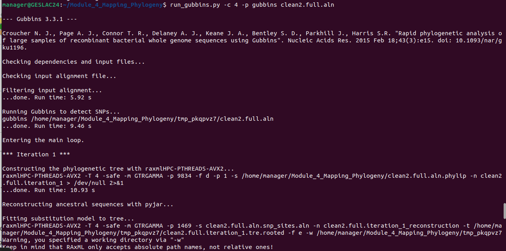
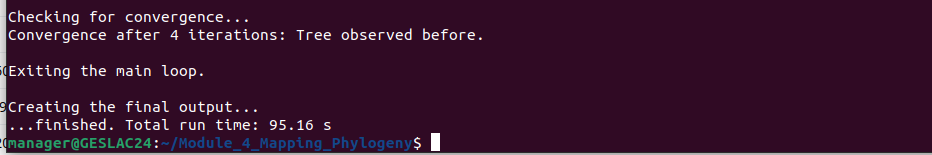
Note: gubbins can take a long time to run on some computers. If gubbins takes more than 10 mins to complete, we have already run it for you - the files are available in the GitHub folder at ~/github_repository/Modules/Mapping_and_Phylo/gubbins_backup_2024.tar.gz.
ls -lh ~/github_repository/course_data_2025/mapping_and_phylo/cp ~/github_repository/course_data_2025/mapping_and_phylo/gubbins_backup_2024.tar.gz .tar -zxf gubbins_backup_2024.tar.gzNote: You may notice there is a directory called gubbins_backups - this is from a previous year, and will not be used today.
Lets look at what gubbins has done
ls -l gubbins.*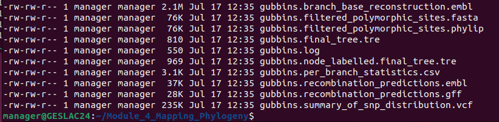
You can explore these files For example gubbins.recombination_predictions.gff is a gff file that contains a record of each recombination block identified, how many SNPs it contains, and what samples are affected.
head gubbins.recombination_predictions.gff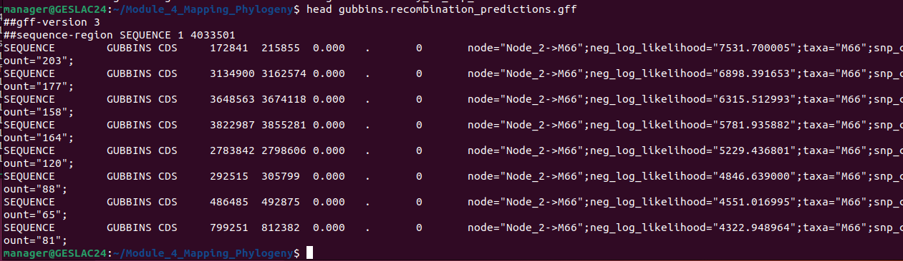
gubbins.filtered_polymorphic_sites.fasta is a fasta file containing only SNPs, where recombining sites have been ‘masked to N’.
head gubbins.filtered_polymorphic_sites.fasta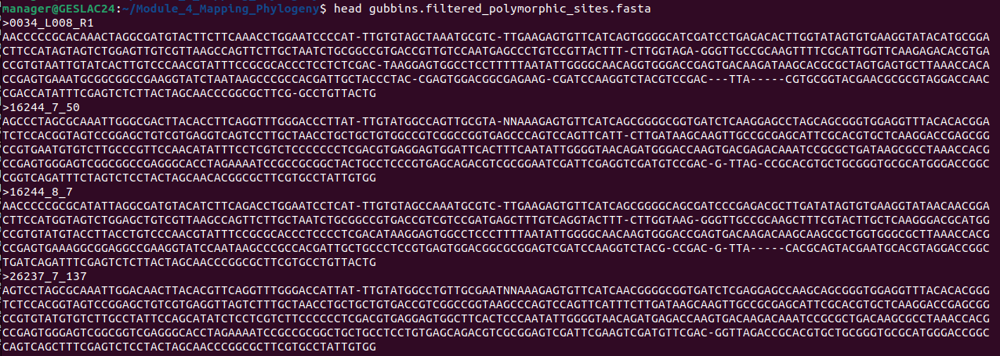
gubbins.final_tree.tre is a phylogeny in which recombination has already been accounted for.
You can visualise this in figtree or microreact as above.
Root a phylogeny
The trees outputted by iqtree and gubbins are unrooted, but we may want to apply some evolutionary direction to them. One approach that is commonly used for bacterial datasets is midpoint rooting. Midpoint rooting involves locating the midpoint of the longest path between any two tips and putting the root in that location. Note that this does not necessarily infer the true root, and this should be used with caution.
To midpoint root our tree, we will use a simple script written in python that uses the ete package. You can examine the code:
less midpoint.root.pyTo make the code work in the VM, we need to load another conda environment:
conda activate ete3-env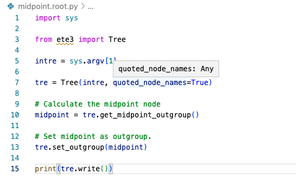
We can use this script to midpoint root our tree
python midpoint.root.py gubbins.final_tree.tre > gubbins.final_tree.midpoint.treYou can visualise this in figtree or microreact as above. How does it compare to the unrooted version?
Visualising recombination blocks using phandango
We can also visualise the tree together with the recombination blocks inferred by gubbins using a webtool called phandango
Using your browser, navigate to (https://jameshadfield.github.io/phandango/#/)
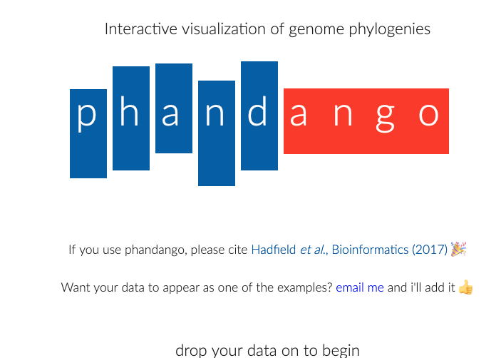
On your VM desktop, go to the file manager, and navigate to /home/manager/Module_4_Mapping_Phylogeny
Drag and drop the tree file gubbins.final_tree.midpoint.tre into the phandango browser window
Drag and drop the recombination gff file gubbins.recombination_predictions.gff into the phandango browser window
Phandango should automatically display blocks of recombination in red (ancestral) and blue (specific to a sample)
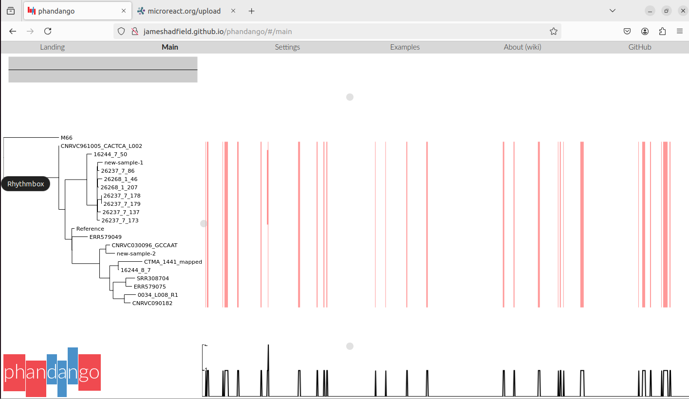
Clustering genomes using fastBAPS
We can cluster genomes for epidemiology in a variety of ways, depending on the goal and genetic distances involved. Here will use fastBAPS, which is an optimised implementation of the original hierBAPS algorithm for hierarchical partitioning and Bayesian clustering of genomes. fastBAPS can be run in R as well as from the command line.
In the command below, we: * specify a set of SNPs/alleles for use by the model. * -i gubbins.filtered_polymorphic_sites.fasta * specify the name of the output file. * -o fastbaps.clusters.csv * specify that we want hierarchical clustering at two different levels (i.e. BAPS will attempt to subdivide “level 1 clusters” to form “level 2 clusters”). * --levels 2 * specify a model for delineating genomes - we will use a relaxed clustering model which should maximise the number of clusters we get at level 2. * -p optimise.baps * specify an existing phylogenetic tree that we want to use for conditioning the statistical model. This option is not essential, but it ensures that the tree and the clusters are consistent with one another. * --phylogeny gubbins.final_tree.tre
run_fastbaps -i gubbins.filtered_polymorphic_sites.fasta -o fastbaps.clusters --levels 2 -p optimise.baps --phylogeny gubbins.final_tree.treWe can view the output using head or cat
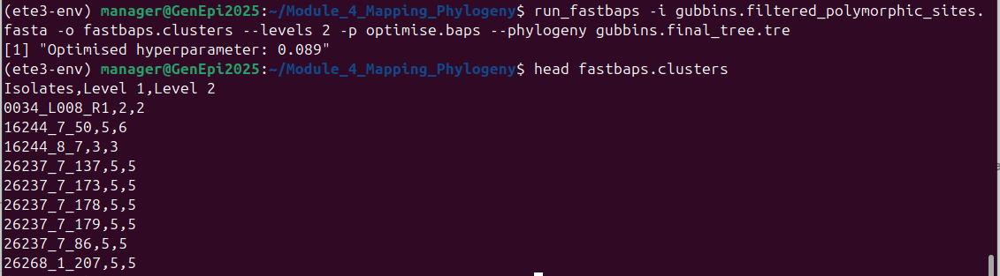
Now that we have clusters, let’s see how they look against the phylogenetic tree we made earlier.
First, we’ll need to make the csv file with our clusters compatible with microreact. We need to change the header of the first column from Isolates to ID. We’ll use some simple code on the command line to do this:
sed s/Isolates/ID/ fastbaps.clusters > fastbaps.clusters.fixid.csvhead fastbaps.clusters.fixid.csv
Go to the microreact webpage, and try uploading the new gubbins filtered tree and the fastbaps clusters

You can see that the first column has been correctly identified as the ‘ID’ - this will be linked to the taxa in the tree
Click Continue
You should now see a tree coloured by your fastbaps groups. You can use the toggles to change the colouring and to add metadata blocks.
END
<<< Go back to Manual Contents Page